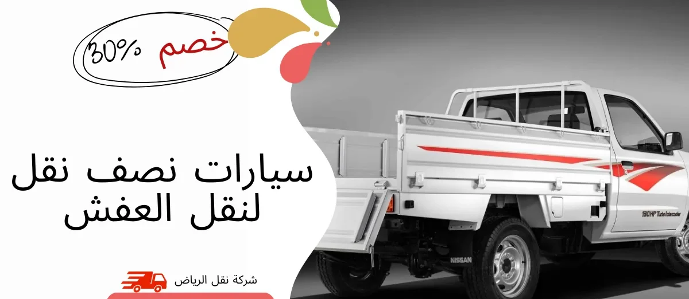

سيارات نصف نقل لنقل العفش بالرياض0541145506

في عالم خدمات النقل تبرز أهمية اختيار الوسيلة المناسبة لنقل الأثاث، حيث تلعب سيارات نصف نقل لنقل العفش دورًا حيويًا في تسهيل هذه العملية، وتتميز هذه السيارات بقدرتها على تحمل الأوزان الكبيرة ومرونتها في الحركة، مما يجعلها الخيار المثالي للأفراد والشركات على حد سواء، ومن خلال استخدام سيارات نصف النقل يمكن تفادي العديد من المشكلات التي قد تواجه العملاء أثناء الانتقال، وتسعى شركة نقل بالرياض لتقديم أفضل الحلول في هذا المجال مما يضمن تجربة نقل سلسة وآمنة.
سيارات نصف نقل لنقل العفش
تعد سيارات نصف النقل من الخيارات المثالية لنقل العفش، حيث تتميز بقدرتها على نقل الأحمال الثقيلة بشكل آمن وفعال، وتعتبر هذه السيارات مناسبة لمختلف أنواع الأثاث، سواء كانت قطع كبيرة مثل الأرائك والطاولات أو قطع صغيرة مثل الكراسي والأدوات المنزلية، ونتمتع سيارات نصف نقل لنقل العفش بخصائص تجعلها الخيار الأمثل للأفراد والشركات على حد سواء اتصل الان بنقل الرياض، ولنستعرض بعض التفاصيل المهمة حول هذه السيارات:
السعة والحجم
تتميز سيارات نصف النقل بسعة تحميل كبيرة، حيث يمكنها استيعاب كميات كبيرة من العفش في جولة واحدة، مما يساعد على تقليل الوقت والجهد المبذول في عملية النقل، ويعد هذا الأمر مهمًا خاصةً عند الانتقال من منزل إلى آخر أو عند نقل عفش مكتبي.
تصميم مخصص
تأتي سيارات نصف النقل بتصميمات متنوعة تناسب احتياجات النقل المختلفة، وبعض السيارات تحتوي على صناديق مغلقة لحماية الأثاث من العوامل الجوية، بينما توفر أخرى مساحات مفتوحة تتيح تحميل الأثاث الأكبر حجمًا بسهولة.
المرونة في الحركة
بسبب حجمها المتوسط يمكن لسيارات نصف النقل التحرك بسهولة في الشوارع الضيقة والأزقة، مما يجعلها مثالية للنقل في المدن الكبيرة، وهذا الأمر يسهل الوصول إلى المواقع التي قد تكون صعبة الوصول بالنسبة للشاحنات الكبيرة.
التكلفة
تعتبر تكاليف استئجار سيارات نصف نقل لنقل العفش معقولة مقارنةً بخيارات النقل الأخرى، وتقدم العديد من الشركات مثل شركة نقل الرياض أسعار تنافسية تجعلها خيارًا جيدًا للأفراد والعائلات.
الأمان في النقل
تعتبر سيارات نصف النقل آمنة جدًا لنقل العفش، حيث يتم تجهيزها بنظام تثبيت يعزز استقرار الأثاث أثناء النقل، وهذا يقلل من خطر التلف أو الكسر.
وبفضل هذه الميزات وغيرها تعتبر سيارات نصف نقل لنقل العفش الخيار المثالي لمن يبحث عن طريقة فعالة وآمنة لنقل أغراضه.
سيارة نقل عفش صغيرة بالرياض
إذا كنت تبحث عن سيارة نقل عفش صغيرة بالرياض لنقل قطع محدودة من اثاثك أو لخدمة توصيل عفش داخل حي معين، فإن شركة نقل الرياض تتيح لك كل ما تحتاجه وذلك لأن لديها أسطول سيارات بأحجام مختلفة لتلبية حاجة عملائها، إليك مواصفات سيارة نقل صغيرة بالرياض التي تتيحها شركة نقل الرياض:
- سيارة صغيرة مبطنة من الداخل لحمية عفشك من أي خدوش أو تصدعات.
- يقود سيارة النقل الصغيرة سائقين محترفين ومدربين مما يضمن لك نقل أثاثك بأمان.
- مناسبة للتنقل بين حي العليا، حطين، السويدي، الأحياء الأخرى الصغيرة.
- تزود سيارة نقل صغيرة بالرياض بأدوات تثبيت للحفاظ على أمان الأثاث.
نقل عفش مع التغليف بالرياض
إذا كنت تريد نقل عفشك بأمان دون الإضرار به، فإن اختيارك لسارة نقل عفش صغيرة من شركة نقل الرياض هي الخيار الأمثل لك، وذلك لأن الشركة توفر سيارة مجهزة بأحدث التقنيات لتعمل على حفظ سلامة الأثاث، تستخدم الشركة أيضَا أدوات تغليف من أفضل الأنواع مما يمنحك تجربة نقل مريحة وخالية من التلف، إليك أهم مميزات التغليف أثناء نقل العفش:
- حماية الأثاث من أي صدوع أو خدوش قد تحدث أثناء عملية النقل.
- الحفاظ على الأجهزة الكهربائية والزجاجيات من التلف والإنكسار.
- تغليف العفش يسهل من عملية النقل من حيث التركيب والتفريغ.
أنواع سيارات نقل عفش الرياض
تعتبر سيارات نقل عفش صغيرة بالرياض خيارًا مثاليًا للأشخاص الذين يرغبون في النقل داخل الأحياء أو النقل لمسافات صغيرة، وذلك لأن السيارات الصغيرة لديها مرونة كبيرة في التحرك بين الأحياء الضيقة، نحن في شركة نقل الرياض نوفر لك أنواع كثيرة من سيارة نقل عفش صغيرة بالرياض لتلبي جميع احتياجاتك، ومن هذه الأنواع:
- دينا صغيرة مفتوحة: وهي مناسبة للتنقل بين الأحياء والشوارع الضيقة وتستخدم لنقل الصناديق والقطع المتوسطة الحجة داخل الأحياء.
- دينا مغلقة: تستخدم بعرض نقل الأغراض الحساسة وحمايتها من العفش والأتربة.
- شاحنات فان صغيرة: وهي مغلقة بالكامل، وتستخدم في نقل الأجهزة الكهربائية.
الخطوات الواجب القيام بها عند نقل كمية صغيرة من العفش
نقل كمية صغيرة من العفش لا يقل أهمية عن الكميات الكبيرة فكلاهما يحتاج إلى اهتمام وتنظيم عالي الدقة لحمايتهما من التلف أو الفقد، في شركة نقل الرياض تهتم بكافة التفاصيل سواء كانت كمية صغيرة أم كبيرة لتضمن لك نقل آمن لجميع قطع أثاثك، إليك خطوات النقل مع شركة نقل الرياض:
- تقوم الشركة أولًا بجرد جميع القطع التي سيتم نقلها، ووضعها في السيارة المناسبة لها.
- يتم تغليف جميع قطع الأثاث سواء كمية صغيرة أم كبيرة، بإستخدام الفقاعات البلاستيكية لضمان نقلها بدون أي خدوش أو صدمات.
- اختيار سيارة النقل المناسبة لعدد القطع، فعند نقل كمية صغيرة يتم إستخدام سيارة نقل عفش صغيرة لتسهيل الحركة وتقليل التكلفة.
- تحميل القطع على السيارة بانتظام لضمان عدم كسر أي شيء من الأثاث.
- عند الوصل إلى المكان المراد النقل إليه يتم تفريغ الأثاث بعناية، وتركيب ما يلزم.
اسعار سيارة نقل عفش صغيرة
تختلف اسعار سيارات نقل عفش الرياض بإختلاف عدة عوامل منها:
- كميه الاثاث المراد نقلها.
- المسافر بين الموقعين.
- الكمية المستخدمة من أدوات التغليف.
- وقت الحجز سواء في مواسم التنقل أو الأوقات العادية
إذا كنت ترغب في خدمة مميزة بجودة عالية وأسعار تنافسية، فإن شركة نقل الرياض هي الخيار الأمثل لك وذلك لأنها تقدم خطط سعرية مرنة تناسب جميع الاحتياجات، أنواع مختلفة من السيارات لتناسب جميع الكميات المنقولة، تواصل الان مع شركة نقل الرياض للحصول على خدمة بأعلى جودة وأفضل الأسعار.
خدمة نقل الأجهزة الكهربائية بالرياض بسيارة نقل عفش صغيرة
عند نقل الأجهزة الكهربائية فإن ذلك يحتاج إلى عناية فائقة ودقة عالية في عملية النقل، توفر هذا شركة نقل الرياض من خلال توفير مجموعة من سيارات نقل عفش الرياض المجهزة بأحدث التقنيات للمحافظة على أمان الأجهزة، وتهتم أيضًا شركة نقل الرياض بالتغليف الجيد للأجهزة مما يمنح تجربة نقل احترافية لا مثيل له بأسعار تنافسية، احجز الآن مع شركة نقل الرياض من خلال 0541145506 واستمتع بأفضل تجربة نقل في الرياض.
اسعار عربيات نقل العفش
تتفاوت اسعار عربيات نقل العفش بشكل كبير بناءً على عدة عوامل ومنها نوع السيارة وحجم الأثاث والمسافة التي سيتم نقل العفش خلالها، وتهتم الشركات مثل شركة نقل الرياض بتقديم أسعار تنافسية تلبي احتياجات العملاء، ودعونا نستعرض بعض العوامل المؤثرة في تحديد الأسعار:
نوع السيارة
تختلف الأسعار بناءً على نوع السيارة المستخدمة، وعادةً ما تكون سيارات نصف النقل أقل تكلفة من الشاحنات الكبيرة مما يجعلها خيارًا مفضلًا للعديد من العملاء، وتعتبر سيارات نصف نقل لنقل العفش مثالية لنقل الأثاث بشكل آمن وفعال.
حجم الأثاث
كلما زادت كمية الأثاث المراد نقله زادت التكلفة، لذلك من المهم تقدير حجم الأثاث بدقة قبل طلب الخدمة، وتقدم بعض الشركات خدمات تقييم مجانية لمساعدة العملاء في تقدير التكلفة بدقة.
المسافة
تلعب المسافة دورًا كبيرًا في تحديد السعر، ويتطلب النقل لمسافات طويلة يتطلب تكاليف إضافية بينما النقل المحلي يكون عادةً أقل تكلفة.
الخدمات الإضافية
بعض الشركات تقدم خدمات إضافية مثل التعبئة والتغليف أو فك وتركيب الأثاث وهذا يؤثر أيضًا على السعر الإجمالي.
العروض والخصومات
تقدم العديد من الشركات عروضًا خاصة وخصومات على خدمات نقل العفش، مما يمكن العملاء من الاستفادة من أسعار منخفضة في بعض الأحيان.
من المهم مقارنة الأسعار بين الشركات المختلفة للحصول على أفضل عرض مع مراعاة جودة الخدمة المقدمة.
عربيات نقل عفش
تعتبر عربيات نقل العفش من العناصر الأساسية في عمليات النقل، حيث تلعب دورًا رئيسيًا في توفير وسائل النقل المناسبة لنقل الأثاث، وتأتي هذه العربيات بأحجام وتصميمات مختلفة، مما يجعلها ملائمة لمختلف أنواع النقل، ودعونا نستعرض بعض التفاصيل المتعلقة بعربيات نقل العفش بالرياض:
أنواع العربيات
هناك عدة أنواع من عربيات نقل العفش بدءًا من عربيات النقل الصغيرة التي تناسب المنازل وصولاً إلى العربيات الكبيرة التي تتناسب مع الشركات والمكاتب، وتساعد عربيات نصف نقل لنقل العفش على التعامل مع كميات كبيرة من الأثاث بشكل أسهل.
التقنيات الحديثة
مع تقدم التكنولوجيا أصبحت عربيات نقل العفش مزودة بميزات تسهل عملية النقل، مثل أنظمة التعليق المتقدمة التي تقلل من الاهتزازات أثناء القيادة مما يساعد على الحفاظ على الأثاث في حالة جيدة.
التكلفة
تختلف تكلفة استئجار عربيات نقل العفش بناءً على نوع السيارة وحجم الأثاث، ومن المهم معرفة الأسعار قبل اتخاذ القرار لضمان الحصول على أفضل قيمة مقابل المال.
سهولة الاستخدام
تعتبر عربيات نقل العفش سهلة الاستخدام، حيث يمكن تحميل الأثاث وتفريغه بسرعة مما يوفر الوقت والجهد.
الأمان
توفر عربيات نقل العفش وسائل تأمين فعالة لحماية الأثاث أثناء النقل مما يقلل من خطر التلف أو الكسر.
تعتبر عربيات نقل العفش خيارًا مثاليًا للأفراد والشركات التي تحتاج إلى نقل الأثاث بشكل سريع وآمن.
سيارة نقل عفش صغيرة حراج
تعتبر سيارة نقل العفش الصغيرة خيارًا شائعًا في حراجات بيع وشراء الأثاث، حيث توفر وسيلة فعالة لنقل القطع الصغيرة والمتوسطة الحجم، وتتميز هذه السيارات بالعديد من الخصائص التي تجعلها مفضلة لدى الكثيرين، ودعونا نستعرض بعض التفاصيل حول سيارة نقل عفش صغيرة حراج:
القدرة على المناورة
تعد سيارات نقل العفش الصغيرة مثالية للمناطق الضيقة، حيث يمكنها الدخول والخروج بسهولة من الأزقة والشوارع الضيقة، وهذا يجعلها خيارًا ممتازًا لنقل العفش في المدن.
السعر المناسب
تعتبر أسعار سيارات نقل العفش الصغيرة معقولة جدًا مما يجعلها مناسبة للأفراد والشركات ذات الميزانيات المحدودة، وتتقدم الكثير من الشركات مثل شركة نقل بالرياض خدمات بأسعار تنافسية.
السرعة والكفاءة
يمكن لسيارات نقل العفش الصغيرة إتمام عملية النقل بسرعة مما يوفر الوقت والجهد، وهذا الأمر مهم بشكل خاص عند التعامل مع عمليات النقل العاجلة.
سهولة التحميل والتفريغ
بفضل حجمها الصغير يمكن تحميل الأثاث بسهولة ودون الحاجة إلى معدات إضافية، وهذا يعد ميزة كبيرة عند نقل الأثاث بنفسك.
الاستخدام المتعدد
تستخدم سيارات نقل العفش الصغيرة ليس فقط لنقل الأثاث، ولكن أيضًا في نقل المعدات والأدوات مما يجعلها خيارًا متعدد الاستخدامات.
وبفضل هذه الميزات تعتبر دينا نقل عفش بالرياض ظهرة لبن سيارة نقل عفش صغيرة خيارًا ممتازًا للمستخدمين الذين يحتاجون إلى خدمة نقل فعالة وبأسعار مناسبة.
عربيه نص نقل جامبو
تعتبر عربيه النص نقل جامبو الخيار المثالي للمشاريع الكبيرة وعمليات النقل التي تتطلب سعة أكبر، وتتميز هذه العربيات بالعديد من الخصائص التي تجعلها مناسبة لنقل العفش بكفاءة وأمان، وإليكم عدة بعض من المميزات حول عربيه نص نقل جامبو:
السعة الكبيرة
تعتبر عربيه نص نقل جامبو مثالية لنقل كميات كبيرة من الأثاث والمعدات، مما يجعلها الخيار الأمثل للنقل التجاري أو الانتقال من منازل كبيرة، وهي تستخدم سيارات نصف نقل لنقل العفش بشكل متكرر في هذه الحالات.
التصميم المتين
تأتي هذه العربيات بتصميم قوي يسمح لها بتحمل الأوزان الثقيلة، وهذا يجعلها مثالية لنقل الأثاث الكبير مثل الأسرة والخزائن.
المرونة في الاستخدام
يمكن استخدام عربيه نص نقل جامبو في مجموعة متنوعة من الأغراض بما في ذلك نقل الأثاث والمعدات الصناعية، وحتى المواد الغذائية.
خدمات إضافية
تقدم العديد من الشركات خدمات إضافية مثل التعبئة والتغليف مما يساعد على حماية الأثاث أثناء النقل، ويمكن للعملاء الاستفادة من هذه الخدمات لضمان عدم تلف العفش.
الكفاءة في النقل
بفضل سعتها الكبيرة يمكن لعربيه نص نقل جامبو إتمام عمليات النقل بشكل أسرع مما يوفر الوقت والمجهود.
بفضل هذه الميزات تعتبر عربيه نص نقل جامبو خيارًا ممتازًا للشركات والأفراد الذين يحتاجون إلى نقل كميات كبيرة من العفش أو المعدات.
الاسئلة الشائعة حول سيارات نصف نقل لنقل العفش
كيف يمكنني تحديد تكلفة نقل العفش باستخدام سيارات نصف النقل؟
تعتمد التكلفة على عوامل مثل نوع السيارة وحجم الأثاث والمسافة بالإضافة إلى أي خدمات إضافية مثل التعبئة والتغليف.
هل سيارات نصف النقل آمنة لنقل العفش؟
نعم حيث يتم تجهيزها بوسائل تأمين فعالة لحماية الأثاث أثناء النقل مما يقلل من خطر التلف.
هل يمكنني استئجار سيارة نصف نقل لنقل العفش لفترة قصيرة؟
نعم تقدم العديد من الشركات خيارات استئجار مرنة تناسب الاحتياجات المختلفة، بحيث يمكنك استئجار السيارة لفترة قصيرة أو طويلة.
ما هي شركة نقل بالرياض التي يمكنني الاعتماد عليها؟
تعتبر شركة نقل الرياض من الخيارات الموثوقة، حيث تقدم خدمات نقل عالية الجودة بأسعار تنافسية.